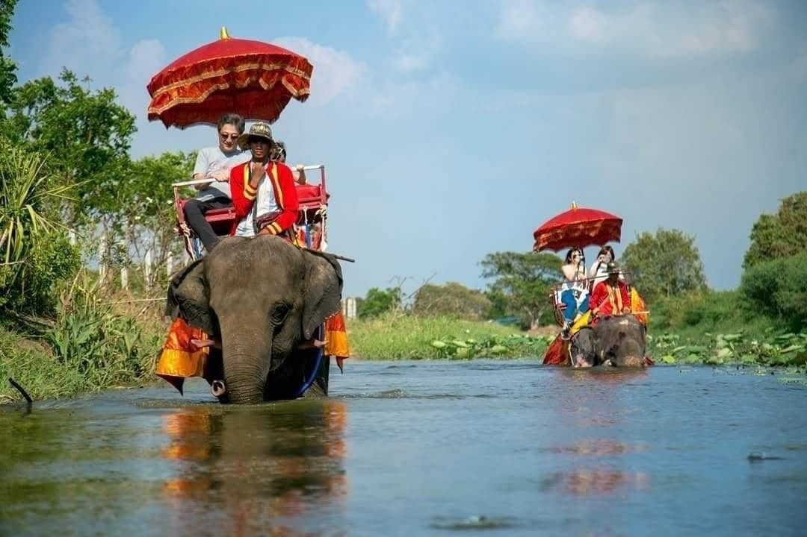

01
ชุดไทย
การแต่งกายแบบไทยสะท้อนเอกลักษณ์ และวิถีชีวิตของผู้คน โดยรูปแบบการแต่งกาย มีความเหมาะสมกับเพศ ฐานะ และโอกาสต่าง ๆ
เรื่องราวการแต่งกาย บ้านเรือน ตลาด ชุมชน และวิถีชีวิตของผู้คนในกรุงศรีอยุธยา ที่สะท้อนความสัมพันธ์ระหว่างผู้คน วัฒนธรรม และสายน้ำ
การแต่งกายเป็นส่วนหนึ่งที่สะท้อนวิถีชีวิต และวัฒนธรรมของผู้คนในสมัยอยุธยา รูปแบบเสื้อผ้าและเครื่องแต่งกายมีความแตกต่างกัน ตามเพศ ฐานะ และโอกาสในการใช้ชีวิต
การแต่งกายแบบไทยสะท้อนเอกลักษณ์ และวิถีชีวิตของผู้คน โดยรูปแบบการแต่งกาย มีความเหมาะสมกับเพศ ฐานะ และโอกาสต่าง ๆ

ผ้าสไบและผ้านุ่งเป็นเครื่องแต่งกาย ที่สะท้อนรูปแบบการแต่งกายของผู้หญิงไทย ในอดีต และเป็นส่วนหนึ่งของวัฒนธรรม การแต่งกายที่สืบทอดต่อกันมา
ผู้คนในกรุงศรีอยุธยาใช้ชีวิตอยู่ท่ามกลางเมือง ชุมชน ตลาด และแม่น้ำหลายสาย ทำให้การค้าขาย การเดินทาง และการอยู่อาศัย มีความเกี่ยวข้องกับสภาพแวดล้อมรอบตัว

บ้านเรือนของผู้คนมีความสัมพันธ์ กับสภาพแวดล้อมและภูมิประเทศ โดยเฉพาะบริเวณใกล้แม่น้ำ และพื้นที่ชุมชน

ตลาดเป็นพื้นที่สำคัญในการซื้อขายสินค้า แลกเปลี่ยนสิ่งของ และพบปะผู้คน จึงเป็นส่วนหนึ่งของชีวิตประจำวัน ของชาวอยุธยา
สายน้ำเป็นส่วนสำคัญของกรุงศรีอยุธยา ทั้งในด้านการเดินทาง การค้าขาย และการดำรงชีวิตของผู้คน จึงเกิดวิถีชีวิตที่ผูกพันกับแม่น้ำอย่างใกล้ชิด

ผู้คนใช้แม่น้ำเป็นเส้นทางเดินทาง และเป็นพื้นที่ในการทำมาหากิน บ้านเรือนและชุมชนจำนวนมาก จึงมีความสัมพันธ์กับสายน้ำ

สายน้ำไม่ได้เป็นเพียงเส้นทางคมนาคม แต่ยังเป็นส่วนหนึ่งของชุมชน การค้าขาย และกิจวัตรประจำวัน ของผู้คนในอยุธยา
อาหารเป็นอีกสิ่งหนึ่งที่สะท้อนวิถีชีวิต และการแลกเปลี่ยนทางวัฒนธรรมของอยุธยา ซึ่งเป็นเมืองที่มีผู้คนหลากหลายเชื้อชาติ เดินทางเข้ามาค้าขายและอาศัยอยู่

อาหารของอยุธยามีความหลากหลาย และได้รับอิทธิพลจากผู้คนหลายกลุ่ม เนื่องจากอยุธยาเป็นเมืองที่มีการติดต่อ ค้าขายกับผู้คนจากหลายพื้นที่ วัฒนธรรมด้านอาหารจึงเกิดการผสมผสาน และกลายเป็นส่วนหนึ่งของเอกลักษณ์ ทางวัฒนธรรมของอยุธยา